Atelier en direct
Toutes vos imprimantes, leur progression, le temps restant, l'heure de fin, les couches et les températures.
Bala Print suit et pilote vos imprimantes Bambu Lab via votre propre serveur Bambuddy : caméra, file d'attente, filaments, entretien et séchage, sans dépendre du cloud.
Gratuit · Nécessite un serveur Bambuddy · Mode démo intégré
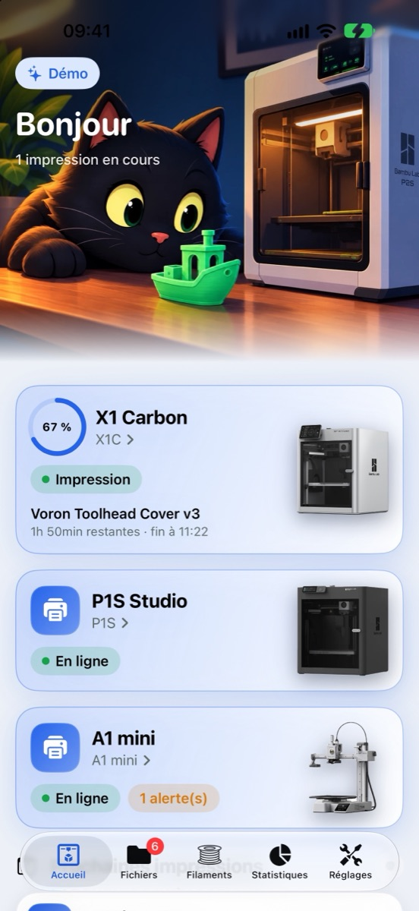
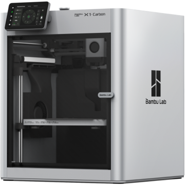
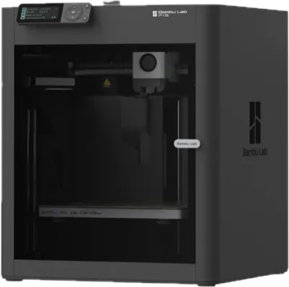
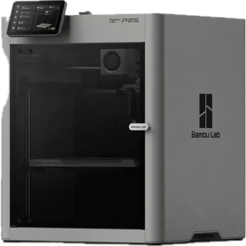
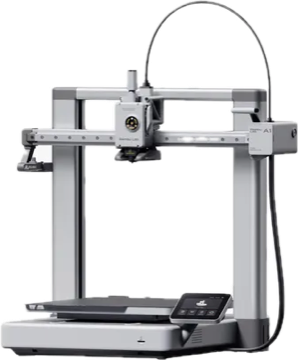
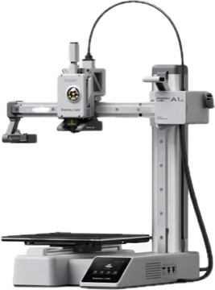
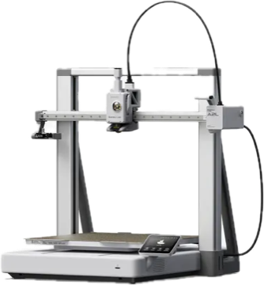
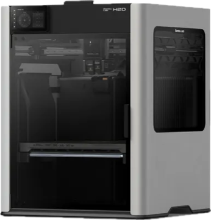
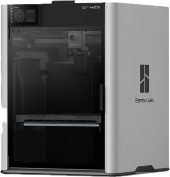
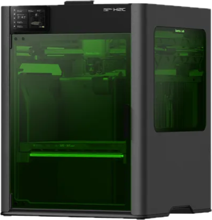
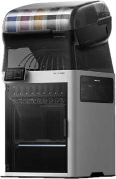
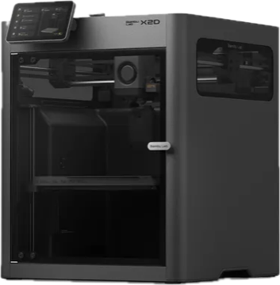
Bala Print reprend ce que vous faites dans l'interface web de Bambuddy et l'adapte au doigt et à l'écran verrouillé.
Toutes vos imprimantes, leur progression, le temps restant, l'heure de fin, les couches et les températures.
Caméra en direct, pause, reprise, arrêt, éclairage, vitesse, ventilateurs et prise connectée.
Parcourez vos fichiers, regroupez un projet, changez l'ordre et planifiez, synchronisé avec Bambuddy.
Niveau réel de chaque bobine tiré de votre stock, liaison aux emplacements AMS et correction du poids.
Lancez, arrêtez ou programmez un séchage dans l'AMS 2 Pro et l'AMS HT, avec des préréglages par matériau.
Graissage, buse, courroies, filtres : les tâches dues ressortent et se valident d'un « Fait ».
Taux de réussite, heures d'impression, filament consommé, coût et énergie, par matériau et par imprimante.
Activité en direct et Dynamic Island qui avancent même app fermée, widgets avec l'image de la caméra.
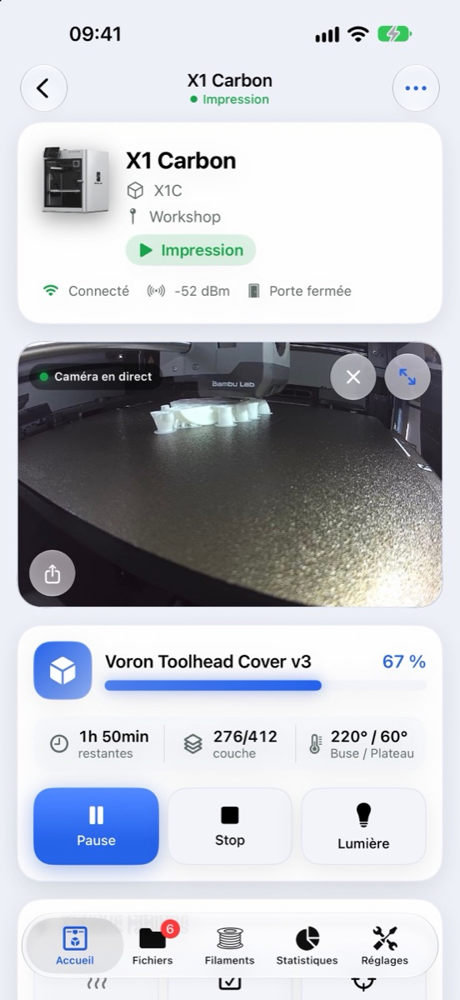
Chaque imprimante a sa page : la caméra en direct en haut, l'impression en cours et ses commandes juste dessous.
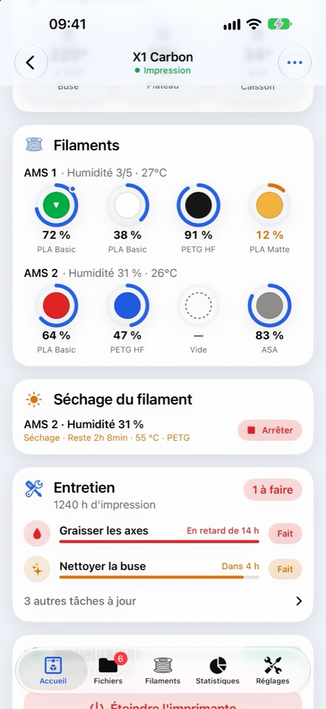
Les niveaux viennent de votre stock Bambuddy, pas d'une estimation approximative de l'AMS.
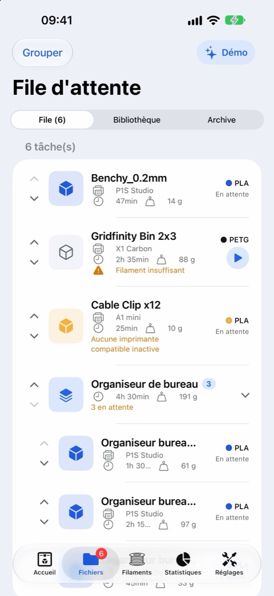
Regroupez les fichiers d'un même projet, montez ou descendez une impression : tout est synchronisé avec Bambuddy, dans les deux sens.
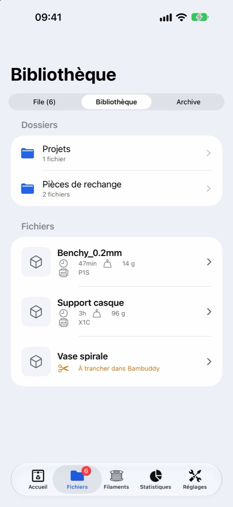
Parcourez les dossiers de la bibliothèque Bambuddy et envoyez un fichier tranché à l'impression ou dans la file, en choisissant le plateau et l'imprimante.
Thème clair, sombre ou automatique, et six couleurs d'interface au choix.
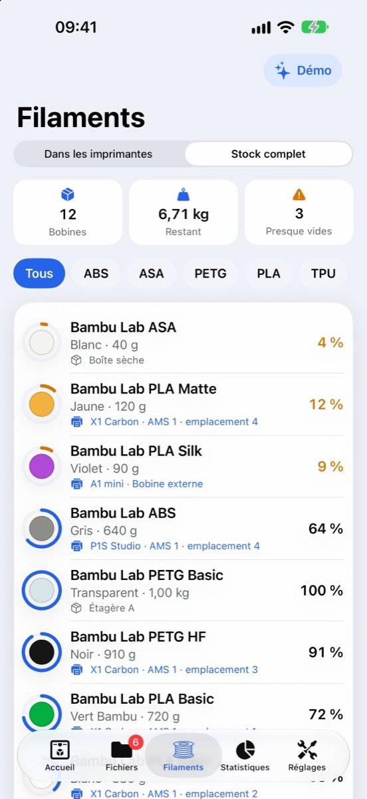
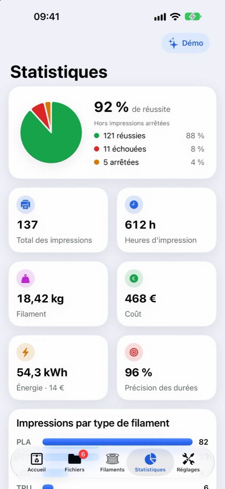
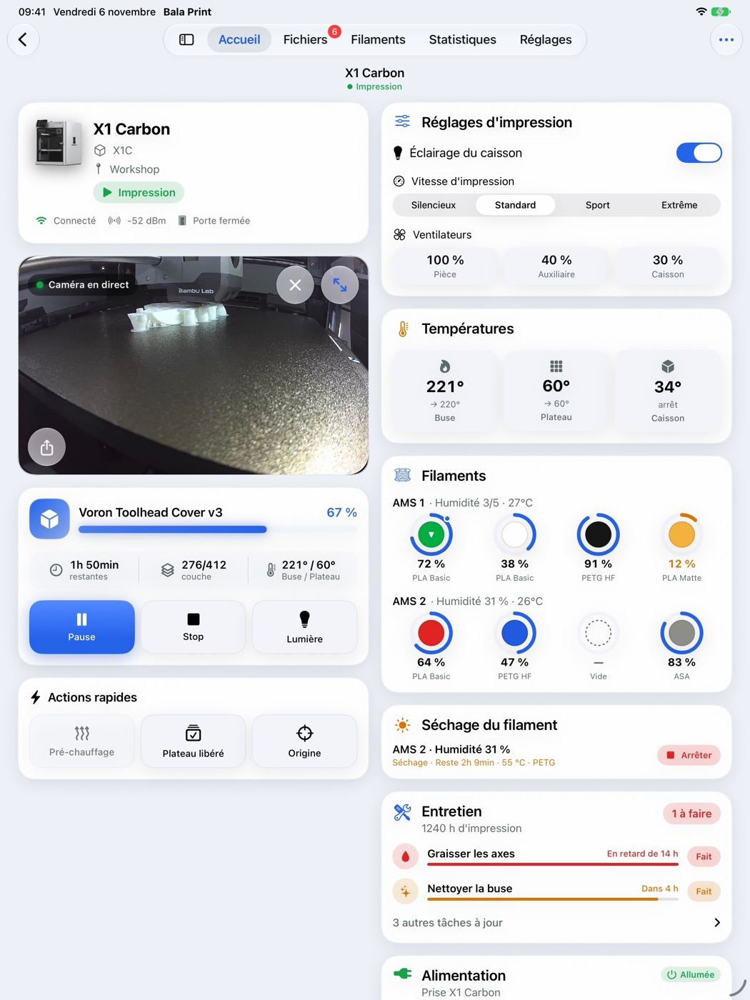
Bala Print se connecte à votre serveur Bambuddy, un logiciel libre que vous hébergez chez vous.
Sur un serveur, un NAS ou un Raspberry Pi de votre réseau, en suivant la documentation du projet.
Dans Bala Print, saisissez l'adresse avec le port (par exemple http://192.168.1.10:8000) et une clé API ou vos identifiants.
Vos imprimantes, votre file et votre stock apparaissent. Pas de serveur sous la main ? Touchez « Essayer la démo ».
Non. Bala Print parle uniquement à votre serveur Bambuddy, qui communique lui-même avec vos imprimantes sur votre réseau.
Oui, si votre serveur Bambuddy est joignable depuis l'extérieur (VPN, Tailscale, reverse proxy…). Les certificats auto-signés sont acceptés serveur par serveur.
Bala Print est gratuite, sans publicité ni abonnement.
Non. Rien n'est envoyé au développeur : l'app ne parle qu'à vos serveurs. Voir la politique de confidentialité.
Toutes celles que Bambuddy gère : X1, P1, P2S, A1, A1 mini, A2L, H2D, H2S, H2C, H3C, X2D. Le séchage dépend du modèle et du firmware.
Bala Print se connecte à votre propre serveur Bambuddy (logiciel libre, auto-hébergé) pour suivre et piloter vos imprimantes 3D Bambu Lab.
http://192.168.1.10:8000.Touchez « Essayer la démo » au premier lancement pour découvrir toutes les fonctions avec des imprimantes fictives.
Bala Print est une application indépendante, non affiliée à Bambu Lab ni au projet Bambuddy.
Dernière mise à jour : 30 octobre 2026. Éditeur : Julien Lamadon.
Bala Print ne collecte aucune donnée personnelle. L'app ne contient ni compte utilisateur, ni publicité, ni outil de mesure d'audience, ni service tiers de suivi.
Ces données restent sur votre appareil et sont supprimées avec l'app.
L'app communique uniquement avec les serveurs Bambuddy que vous avez configurés. Aucune donnée n'est envoyée au développeur.
L'app ne collecte aucune donnée, y compris auprès des enfants.
Pour toute question : page de l'app sur l'App Store › « Assistance de l'app ».
Last updated: October 30, 2026. Publisher: Julien Lamadon.
No data collected. Bala Print collects no personal data. There are no user accounts, ads, analytics or third-party tracking.
Stored on your device. The servers you add (name, address, and either an API key or your credentials; with credentials, the password is kept encrypted in the device's iOS Keychain and only used to sign in to your own server again when the session expires), your display preferences, and a summary of printer status shared with the app's widgets and Live Activity. This data stays on your device and is deleted with the app.
Network. The app only talks to the Bambuddy servers you configure. Nothing is sent to the developer.
Support. Bala Print connects to your self-hosted Bambuddy server. Enter the full address with its port (for example http://192.168.1.10:8000), use an API key when authentication is enabled, or try the built-in demo without a server. Contact the developer from the app's App Store page › "App Support".